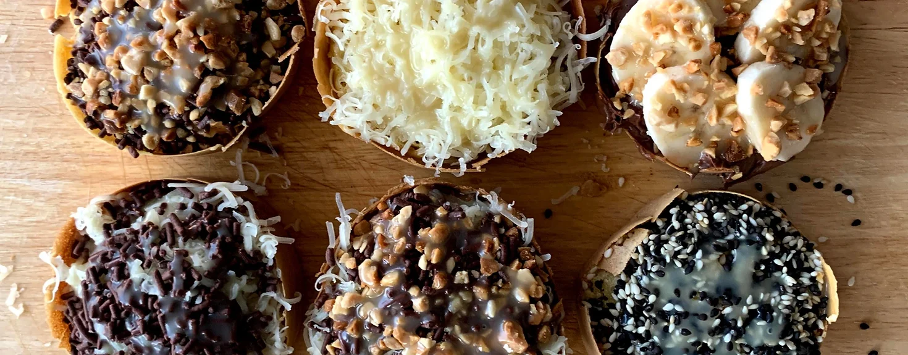
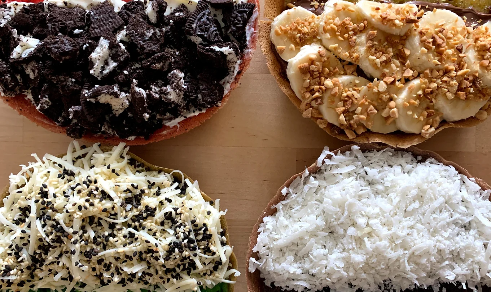

Papa Don Cafe
27-10 23rd Ave
Astoria, NY 11105
Martabak Manis Indo-Pancakes Boba Milk Teas Coffee & Teas
Due to COVID restriction and staffing issue, there will be limited Martabak a day. Please pre-order a day in advance.
King of Indo Street Food
Martabak Manis is a popular street food in Indonesia that can be eaten as a sweet dessert or savory snack.
Martabak Manis, Indo-Pancake, is a thick pancake with the traditional filling of cheese, chocolate sprinkle, peanuts, and condense milk.
MENU

Our Promise
Indonesian food have always been known as a melting pot of flavors, with unique mix of ingredients that are sure to entice every last taste bud.
Here at Papa Don, we aspire to introduce those unique flavors.